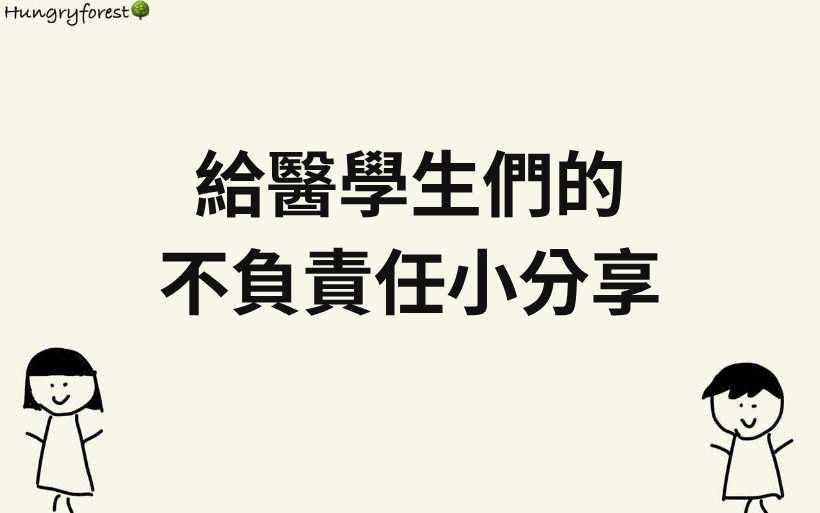

最近因為適逢大學放榜，有許多剛考上醫學系的學弟妹們，抱著一顆既期待又怕受傷害的心情，等待步入醫學的殿堂，所以小編們也收到了許多有關醫學系的問題，那就藉由這篇文跟大家分享一下小編的不負責任建議🤣🤣🤣（以下言論都是小編自己主觀的想法，參考就好喔）
Q：在開學前的暑假，要先做什麼預習嗎？
A：嗯，看來是個非常認真的孩子，才剛考完大考，還願意花時間預習大學的課業！我覺得，當然可以先預習，書讀得越多當然越好📖，但我認為比起預習，我更推薦學弟妹們可以利用這段毫無壓力的假期，找一件自己很想做卻沒有做的事，去完成它；或是去學習一些之前因為課業而延滯的才藝/特殊技能等等（廚藝、音樂、外語）；甚至是去旅行，都是很有意義的，畢竟之後的人生，很難再有這樣的假期～
Q：醫學系的課業會很重嗎？
A：以大一二來說，主要都是基礎科目（普生、普化、有機化、生化、寄生蟲、分生等等），跟高中學的東西蠻像的，其實沒有什麼課業壓力，不過還是建議要好好念，把底子打好是很重要的👍。到了大三，解剖絕對是要花很多心思去念的重點科目🙈，要抱著嚴肅而戰戰兢兢的心情，來修大體解剖這門課，才不會愧對大體老師的付出，對人體的解剖位置也才會有比較立體的概念；生理則是另一宗大科，雖然我個人覺得它念起來沒有解剖那麼艱難，但並不比解剖不重要，唸好它，將來很多臨床上的症狀或觀念就可以不用死背，用想的就會通🙌。那大四的話，是各科模組，以我們學校為例（中山醫），兩個禮拜會考一次期中考，算是一直被考試追著跑，一開始有點不習慣，但後來好像也不覺得特別有壓力，比較讓人困擾的，是國考前的時間分配（念國考or期中考）🥲這個部分，每個人應該都有不同的想法啦🙈大五六就到醫院實習了，這時候沒有課業重不重的問題，但完全是另一個世界，面對的壓力也就不一樣了😅
Q：醫學系會整天都在唸書嗎？
A：當然不會！！！！雖然要念的東西很多，但醫學系最厲害的就是有共筆制度，大家一起努力，做出好的共筆，互利互惠，可以節省非常多時間⏰還有一個很重要的東西，叫做考訊🤪其實大一二的空閒時間真的很多，可以多花在自己覺得值得的事物上面（社團、家人、營隊、系隊、美食、旅遊等等）
Q：成績很重要嗎？
A：我覺得它很重要，也很不重要。成績是對自我學習成果的一個檢視，除此之外，它並無法代表個人表現，抑或是能不能成為一位好醫師👩🏻⚕️但必須說，在未來申請醫院或是科別的時候，有些科部確實會採納成績作為選人的參考，雖然它不是那麼客觀，但成績確實是別人不認識你時，能夠快速了解你過去的學習成果的指標🙈所以如果可以，還是儘量不要太差，也是對自己的負責啦😂😂😂再跟學弟妹們分享一個tips，可以多問問學長姊哪些通識課分數很甜，刷分刷起來是很有感的😎
Q：國考會很難準備嗎？
A：跟其他職類的國考相比，不論是一階還是二階的醫師國考，通過率都算高，但是有逐年越來越難考的趨勢😞版上或Google都可以查到很多學長姊們的心得分享，甚至是整理表格筆記等等，當初小編也是在上面獲益良多，所以我覺得學弟妹們不需要特別擔心國考，雖然在準備的過程會慌張會失措，但有認真讀就會過！
Q：讀哪家醫學系有差嗎？
A：嗯，應該是有差的啦，學費、資源之類的，多少一定有差，那身為中山醫畢業的校友，應該很適合來回答這題，畢竟它總是被稱為全台墊底的醫學系🙈不過，我覺得它就是一個環境，環境確實會影響一個人的視野，但最重要的還是個人的努力，自己怎麼做怎麼學習，才是最重要的！並不是哪家醫學系教出來的學生最容易成為好醫師🤓
最後，祝福學弟妹們都能有個快樂又充實的大學生活，在進入醫院後，也都能不忘了當初想學醫的那份初衷🥺
以上是我的不專業分享，如果有其他問題，都歡迎在下面留言發問喔！
其他三類組的學系也很歡迎發問，如果有我能解答的部分，都會用心回答大家😃

認識小編